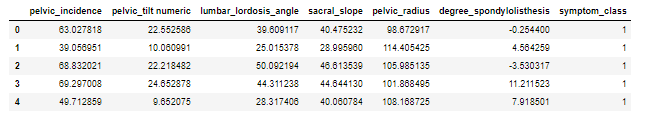

Decision Tree¶
KONSEP DAN TEORI Decision Tree clustering¶
Pengertian Decision Tree¶
Secara konsep Decision Tree adalah salah satu dari teknik decision
analysis.Tries sendiri pertama kali diperkenalkan pada tahun 1960-an oleh Fredkin. Trie
atau digital tree berasal dari kata retrival (pengambilan kembali) sesuai dengan
fungsinya. Secara etimologi kata ini diucapkan sebagai ‘tree’. Meskipun mirip dengan
penggunaan kata ‘try’ tetapi hal ini bertujuan untuk membedakannya dari general tree.
Dalam ilmu komputer, trie, atau prefix tree adalah sebuah struktur data dengan
representasi ordered tree yang digunakan untuk menyimpan associative array yang
berupa string.
Decision Tree adalah sebuah struktur pohon, dimana setiap node pohon
merepresentasikan atribut yang telah diuji, setiap cabang merupakan suatu pembagian
hasil uji, dan node daun (leaf) merepresentasikan kelompok kelas tertentu.
Node dan Algoritma Penyusun Decision Tree¶
Decision Tree merupakan salah satu metode klasifikasi yang menggunakan
representasi struktur pohon (tree) dimana setiap node merepresentasikan atribut, cabang
nya merepresentasikan nilai dari atribut, dan daun merepresentasikan kelas. Node yang
paling atas dari Decision Tree disebut sebagai root. Decision Tree merupakan metode
klasifikasi yang paling populer digunakan. Selain karena pembangunannya relatif cepat,
hasil dari model yang dibangun mudah untuk dipahami.
Pada Decision Tree terdapat 3 jenis node, yaitu:
a. Root Node, merupakan node paling atas, pada node ini tidak ada input dan bisa tidak
mempunyai output atau mempunyai output lebih dari satu.
b. Internal Node , merupakan node percabangan, pada node ini hanya terdapat satu
input dan mempunyai output minimal dua.
c. Leaf node atau terminal node , merupakan node akhir, pada node ini hanya terdapat
satu input dan tidak mempunyai output.
Decision Tree menggunakan algoritma ID3 atau C4.5, yang diperkenalkan dan
dikembangkan pertama kali oleh Quinlan yang merupakan singkatan dari Iterative
Dichotomiser 3 atau Induction of Decision “3 (baca: Tree).″ Algoritma ID3 membentuk
pohon keputusan dengan metode divide-and-conquer data secara rekursif dari atas ke
bawah. Strategi pembentukan Decision Tree dengan algoritma ID3 adalah:
• Pohon dimulai sebagai node tunggal (akar/root) yang merepresentasikan semua
data.
• Sesudah node root dibentuk, maka data pada node akar akan diukur dengan
information gain untuk dipilih atribut mana yang akan dijadikan atribut
pembaginya.
• Sebuah cabang dibentuk dari atribut yang dipilih menjadi pembagi dan data akan
didistribusikan ke dalam cabang masing-masing.
• Algoritma ini akan terus menggunakan proses yang sama atau bersifat rekursif
untuk dapat membentuk sebuah Decision Tree. Ketika sebuah atribut telah dipilih
menjadi node pembagi atau cabang, maka atribut tersebut tidak diikutkan lagi dalam
penghitungan nilai information gain.
• Proses pembagian rekursif akan berhenti jika salah satu dari kondisi dibawah ini
terpenuhi:
-
Semua data dari anak cabang telah termasuk dalam kelas yang sama.
-
Semua atribut telah dipakai, tetapi masih tersisa data dalam kelas yang
berbeda. Dalam kasus ini, diambil data yang mewakili kelas yang terbanyak
untuk menjadi label kelas pada node daun.
- Tidak terdapat data pada anak cabang yang baru. Dalam kasus ini, node
daun akan dipilih pada cabang sebelumnya dan diambil data yang mewakili
kelas terbanyak untuk dijadikan label kelas.
Beberapa contoh pemakaian Decision Tree,yaitu :
• Diagnosa penyakit tertentu, seperti hipertensi, kanker, stroke dan lain-lain
• Pemilihan produk seperti rumah, kendaraan, komputerdanlain-lain
• Pemilihan pegawai teladan sesuai dengan kriteria tertentu
• Deteksi gangguan pada computer atau jaringan computer seperti Deteksi
Entrusi, deteksi virus (Trojan dan varians),dan lain-lain

Contoh Pemanfaatan Decision Tree¶
-
Diagnosa beberapa penyakit seperti kanker, hipertensi, stroke.
-
Menentukan apakah dengan kondisi yang ada layak untuk bermaintenis atau tidak
-
Menentukan apakah sebuah investasi bisnis layak dilakukan atau tidak
-
Pemilihan pegawai teladan sesuai dengan kriteria tertentu
-
Deteksi gangguan pada komputer atau jaringan komputer
-
Pemilihan produk seperti rumah, kendaraan dan lain lain
Inplementasi¶
menginplementasikan data yang telah di buat
import pandas as pd
import numpy as np
import pydotplus
import os
from IPython.display import Image
from sklearn.tree import DecisionTreeClassifier
from sklearn.model_selection import train_test_split
from sklearn import metrics
from sklearn.metrics import accuracy_score
from sklearn.tree import export_graphviz
from sklearn.externals.six import StringIO
from sklearn.tree import export_graphvizmengambil dan mengimport data set weka
data = pd.read_csv("column_2C_weka.csv")menentukan kelas normal dan upnormal yang akan di masukkan kedalam decision tree
data.rename(columns={'class': 'symptom_class'}, inplace=True)
data.symptom_class = [1 if each == "Abnormal" else 0 for each in data.symptom_class]
y = data.symptom_class.values
x_ = data.drop(["symptom_class"],axis=1)
x = (x_ - np.min(x_))/(np.max(x_)-np.min(x_)).values
from sklearn.model_selection import train_test_split
x_train, x_test, y_train, y_test = train_test_split(x, y, test_size=0.3,random_state =42)clf = DecisionTreeClassifier(max_depth=3, criterion="entropy")
clf = clf.fit(x_train, y_train)clf.score(x_test, y_test)
y_pred = clf.predict(x_test)menampilkan data set yang terhitung
data.head()
menampilkan decision tree
feature_cols = ['pelvic_incidence','pelvic_tilt numeric','lumbar_lordosis_angle',
'sacral_slope','pelvic_radius','degree_spondylolisthesis']
dot_data = StringIO()
export_graphviz(clf, out_file=dot_data,
filled=True, rounded=True,special_characters=True,
feature_names = feature_cols,class_names=['1','0'])
graph = pydotplus.graph_from_dot_data(dot_data.getvalue())
graph.write_png('2c.png')
Image(graph.create_png())Referensi :¶
https://dokumen.tips/documents/pembahasan-decision-tree.html
http://newbiegameku.blogspot.com/2014/07/pengertian-decision-tree.html